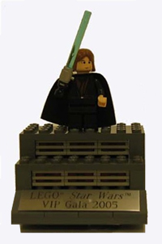
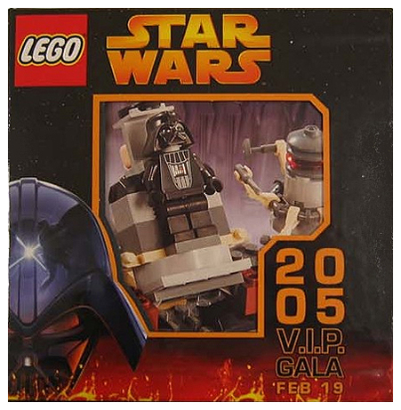
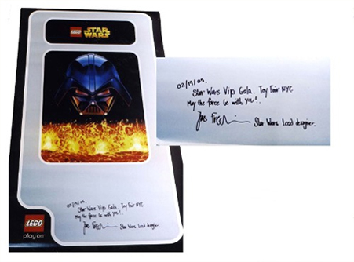
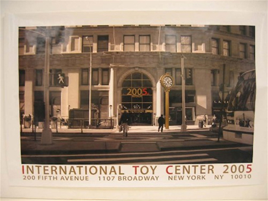
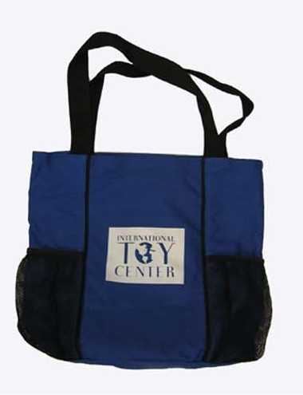

Starting on April 21st and running through May 17th, the NYLine will be holding an eBay auction, with all proceeds going directly to the Starlight Starbright Children's Foundation, in support of their Fun Center program. Over the past few months, we've worked our hardest to avoid unloading the same old unmotivated droids when we pull up the sandcrawler. We hope that everyone will be as excited about these items as we are, and we hope to raise skiff loads of cash for Starlight! Throughout the next few weeks we'll be presenting all of the auction items here in preparation for the big kick-off.
Our first item was presented to the public earlier. Nathan Sawaya's incredible 40" LEGO sculpture of our mascot, the Liberty Jedi is the epitome of our organization. It represents the love of New York, Star Wars, and charity which has served us so well over the past 6 years. Make sure to visit our message boards and Nathan's site to view even more pictures of this amazing achievement in the brick arts.
Staying in the same medium, our next item up for bids is an exclusive lot of LEGO Star Wars items from Toy Fair 2005. This set includes:
VIP Lego Toy Fair Gala Invitation. (Anakin)
Darth Vader Transformation Set - Toy Fair 2005 VIP Gala Edition
Signed Lego Star Wars poster
Toy Fair 2005 poster
Toy Fair Tote Bag
On February 19, 2005 LEGO held a V.I.P. Gala for collector media at their New York Showroom to debut their line for Star Wars Episode 3: Revenge of the Sith. Guests were sent a special Star Wars themed New York Toy Fair invitation to coincide with their 50th anniversary.
This figure, an Episode III Anakin Skywalker minifig mounted on a stand of LEGO, includes light-up lightsaber and an engraved metal plaque commemorating the occasion.
As a special gift to attendees of the gala, LEGO created a limited edition unique slipcase housing the Darth Vader Transformation set (#7251). Only 55 of these were produced, which makes this a highly sought-after item.
The lead designer of the LEGO Star Wars line was also on hand for the event, and graciously signed a beautiful 6' x 3' LEGO Star Wars poster, featuring the now iconic image of Darth Vader overlooking a sea of lava. The poster was signed: "2/29/05 Star Wars VIP Gala. Toy Fair NYC. May the force be with you!"
In addition, this lot includes a Toy Fair 2005 poster and an International Toy Center tote bag.
None of these items have ever been available for retail and are extremely rare. This is a unique opportunity for LEGO Star Wars collectors!